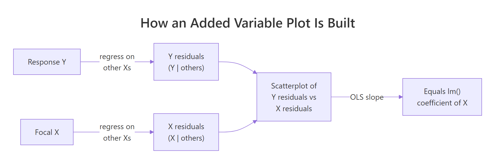

Added Variable Plots in R: Partial Regression & Marginal Effects
An added variable plot (also called a partial regression plot) shows the relationship between one predictor and the response after the linear effects of every other predictor have been removed from both. The slope you see in the plot is exactly the regression coefficient for that predictor.
How does an added variable plot reveal one predictor's effect?
In a multiple regression model, the coefficient for a predictor like hp answers a very specific question: how does mpg change when hp changes by one unit, holding the other predictors fixed? An added variable plot turns that hypothetical into a picture. We will fit a model on mtcars, peel away the influence of every other predictor, and watch the coefficient for hp reappear as the slope of a simple scatterplot.
The two numbers match to many decimal places because they are mathematically the same quantity. The full-model coefficient -0.0180 says that one extra horsepower lowers predicted mpg by about 0.018 miles-per-gallon, holding wt and cyl constant. The added variable plot makes that adjustment visible, every point on the scatter is a car after the linear pull of weight and cylinders has been removed from both mpg and hp. The downward red line you see is the coefficient for hp.
Try it: Build the added variable plot for wt (residualizing on hp and cyl) and confirm its slope matches the wt coefficient from model_full.
Click to reveal solution
Explanation: The recipe is symmetric across predictors. To isolate wt, regress out hp + cyl from both sides, then look at the slope of the residual scatter. The number you get is the partial slope lm() reports.
What math is happening behind the scenes?
The reason added variable plots work is the Frisch-Waugh-Lovell theorem, a 1933/1963 result in linear algebra that says: in any multiple regression, you can recover the coefficient for one predictor by partialling out the other predictors from both the response and that predictor, then doing a simple regression on the residuals.
Formally, if your model is $y = X_1 \beta_1 + X_2 \beta_2 + \varepsilon$, then $\beta_2$ is identical to the OLS slope from regressing $M_1 y$ on $M_1 X_2$, where $M_1 = I - X_1 (X_1^T X_1)^{-1} X_1^T$ is the residual-maker matrix that strips off the part explained by $X_1$.
$$ \hat{\beta}_2 \;=\; (X_2^T M_1 X_2)^{-1} X_2^T M_1 y $$
Where:
- $y$ = the response vector
- $X_2$ = the focal predictor (the one you want a coefficient for)
- $X_1$ = the matrix of all other predictors
- $M_1$ = the residual-maker for $X_1$ (multiplying by it returns the residuals from regressing on $X_1$)
- $\hat{\beta}_2$ = the same coefficient
lm()reports
That double residualization is exactly what we did in code block 1. We can package it into a tiny helper so the reader sees the symmetry directly.

Figure 1: The two-step recipe behind every added variable plot.
Both rows are identical because the helper implements the FWL theorem line-by-line. The first column is the AVP slope for hp; the second is the AVP slope for wt. Whatever predictor you care about, you can isolate it without re-fitting the full model in any new way, you just regress the right things on the right things.
hp is the slope from a univariate regression of leftover-mpg on leftover-hp, after the variation explained by every other predictor has been removed from both. That is why a coefficient can be near zero even when cor(hp, mpg) is strongly negative, the other predictors absorbed the shared variation first.Try it: Extend the helper to also return the standard error and t-statistic for the partial slope, then compare against the row from summary(model_full)$coefficients.
Click to reveal solution
Explanation: The slopes match exactly. The standard errors and t-statistics are very close but not identical because the AVP regression has fewer effective degrees of freedom than lm() accounts for. For coefficient estimates the AVP is exact, for inference always trust summary(model).
How do you generate added variable plots for every predictor at once?
Once you have partial_slope(), looping over every predictor takes one for-loop. For visual diagnostics, you typically want a 2x2 or 3x2 panel showing every AVP side-by-side.
Each panel tells the same story for a different predictor. The slope is the coefficient lm() reported, the spread is what is left after partialling out, and any point that drifts away from the line is a car whose leftover mpg is poorly explained by leftover hp (or wt, or cyl) alone.
In production, the car package gives you a one-liner for the same panel:
car package is not pre-compiled for the in-browser R runtime on this page, so the snippet above is shown for reference only. Install it once with install.packages("car") in RStudio and avPlots() becomes available everywhere. Under the hood it does exactly what our manual loop does, our manual version is what car is computing in C.Try it: Write a function that takes a fitted model and returns a data frame with one row per predictor showing both the manual partial slope and the lm() coefficient. They should match.
Click to reveal solution
Explanation: The function loops partial_slope() over every predictor and lines it up against coef(model). Identical numbers in the two columns confirm the FWL identity for the whole model in one table.
How do you read slope, scatter, and outliers in an added variable plot?
Now that the panel is on screen, what should you actually look at? Four signals matter:
- Slope. The sign and magnitude reproduce the
lm()coefficient. A nearly-flat line means that predictor adds little once the others are accounted for, regardless of how strongly it correlates with the raw response. - Scatter. The vertical spread is the residual variation that the focal predictor still has to explain. Tight scatter around the line means that predictor really is doing the work the model attributes to it; wide scatter means a lot is left unexplained.
- Outliers. A point far from the cloud is a row whose adjusted
ydoes not behave like the others. Added variable plots make these stand out far better than raw scatterplots because the partialling has removed the structure that was hiding them. - Curvature. A clear bend in the cloud says the partial relationship is not linear, even though
lm()is forcing a straight line through it.
Let us build a small synthetic example that has a deliberate quadratic relationship and confirm that the AVP exposes it while the raw scatter does not.
In the left panel, x2's quadratic structure is buried under the linear pull of x1. The fitted line looks fine and you would not suspect a missing term. In the right panel, the AVP for x2 shows a clear U-shape, and the dashed loess curve makes it unmistakable. That is the diagnostic value: a flat-looking residual cloud means the model is doing fine; a curved one tells you to add I(x2^2) (or a spline) to the formula.
Try it: List the top-3 mtcars rows (by car name) with the largest absolute partial residual on the AVP for wt. Those rows are the cars whose adjusted mpg is least well-explained by adjusted wt.
Click to reveal solution
Explanation: The cars at the top of the list have unusually high or low mpg even after accounting for their weight, horsepower, and cylinder count. They sit far from the line on the wt AVP because the model's linear story does not capture them well. Whether your top-3 ordering matches exactly depends on the random tie-breaking, but the same handful of high-leverage cars will dominate.
How is an added variable plot different from a partial residual plot?
These two diagnostics are easy to confuse because both involve "residuals" and both isolate one predictor. They answer different questions:
| Plot | x-axis | y-axis | Best at revealing |
|---|---|---|---|
| Added variable plot | residuals of focal X on others | residuals of Y on others | Partial slope and influential observations |
| Partial residual plot (CR plot) | raw focal X | full residuals + $\hat{\beta}_k x_k$ | Nonlinearity in the focal predictor's contribution |
The AVP shows you what the coefficient is. The partial residual plot (also called a component-plus-residual or CR plot) shows you whether the shape of the relationship is linear. They complement each other: AVP for diagnostics about influence and slope; CR plot for diagnostics about functional form.
The two plots share the same downward slope (that is the hp coefficient in both), but they differ in what is on the x-axis. The AVP uses a residualized hp, so the spread tells you about leverage. The CR plot uses the raw hp and overlays a loess curve, so the deviation between the green dashed loess and the straight red line is the test for nonlinearity. Reach for the AVP when you are auditing coefficients; reach for the CR plot when you are auditing functional form.
Try it: Compute the partial residual vector for hp and verify a lm(partial_residual ~ hp) slope still equals the hp coefficient from the full model.
Click to reveal solution
Explanation: Adding $\hat{\beta}_k x_k$ back to the full residual gives a vector whose linear regression on $x_k$ recovers $\hat{\beta}_k$. CR plots and AVPs share the slope; their advantage is in what else they let you see.
How do you make publication-quality AVPs with ggplot2?
For papers, slides, or dashboards, ggplot2 gives you finer control over labels, ribbons, and rug plots. The recipe below produces a polished AVP for one predictor; loop it with lapply if you want a panel.
The ggplot version adds three things the base plot does not: a confidence ribbon around the partial slope, reference axes at zero so you can see the centroid, and a marginal rug that shows where data actually lives. The story is the same as the base plot, but the figure is now ready to drop into a manuscript.
ggrepel::geom_text_repel(data = subset(avp_df_gg, abs(y) > 3), aes(label = car)) to call out the cars with the biggest leftover residual instead of labelling all 32. Sparse labelling preserves the readability of the cloud.Try it: Change the smoother from method = "lm" to method = "loess" and look at whether the partial relationship is still linear. A flat-ish loess line means linear is fine; a clear bend means consider a transformation.
Click to reveal solution
Explanation: When the loess curve and the linear fit roughly overlap, you have visual evidence that a straight line captures the partial relationship. A clear systematic gap is your cue to add a transformation or a spline term.
Practice Exercises
Exercise 1: AVP for Petal.Length on iris
Fit lm(Sepal.Length ~ Sepal.Width + Petal.Length + Petal.Width, data = iris). Build the added variable plot for Petal.Length from scratch (residualize on the other two predictors) and verify the slope of the residual scatter equals the lm() coefficient.
Click to reveal solution
Explanation: Same recipe, different dataset. Sepal length gains roughly 0.73 units for every extra unit of petal length, after sepal width and petal width are accounted for.
Exercise 2: Build a panel-data structure for any model
Write my_avp_panel(model) that takes any fitted lm() and returns a list with one entry per predictor. Each entry is a two-column data frame holding the residual pair (x_resid, y_resid). Apply it to the iris model from Exercise 1 and confirm the list has one entry per predictor.
Click to reveal solution
Explanation: The function reuses the FWL recipe inside a loop. The output is a tidy structure ready for either base plotting or lapply(..., function(d) ggplot(d, aes(x_resid, y_resid)) + ...).
Exercise 3: Detect curvature with an AVP
Simulate n = 300 rows of y = 2 * x1 + x2^2 + noise. Fit a misspecified linear model lm(y ~ x1 + x2). Build the AVP for x2 and use it to argue, both visually and numerically, that a quadratic term is needed. The numeric argument: refit with I(x2^2) and show the residual sum of squares drops sharply.
Click to reveal solution
Explanation: The AVP for x2 shows a textbook U-shape, and the residual sum of squares falls by an order of magnitude when the squared term is added. Together they make a strong case for the quadratic specification. The AVP told you where to look; the RSS comparison confirmed the fix.
Complete Example
End-to-end on mtcars: fit a 4-predictor model, build all four AVPs by looping the FWL recipe, interpret what each plot says about its coefficient, and decide whether any predictor's relationship looks nonlinear enough to warrant a transformation.
Reading the panel, all four AVPs show roughly straight clouds, the loess curves track the red linear fits closely. None of the four predictors flags an obvious nonlinearity at this sample size. The slope-vs-coefficient table at the bottom confirms the FWL identity for every predictor, your visual diagnostics are anchored to the same numbers lm() reports. If one of those loess curves had bent dramatically, that would be your cue to add an I(x^2) term or a spline before trusting the linear coefficient.
Summary
| Concept | Key takeaway |
|---|---|
| Definition | An AVP plots the residuals of Y (on other Xs) against the residuals of focal X (on other Xs). |
| Frisch-Waugh-Lovell | The OLS slope of those residuals equals the multiple-regression coefficient for the focal predictor. |
| Slope reading | Sign + magnitude reproduce the lm() coefficient exactly. |
| Scatter reading | Vertical spread = leftover variation; tight = focal predictor explains most of it. |
| Outliers | Stand out far better than in raw scatterplots because partialling removes confounding structure. |
| Curvature | A bent cloud says the linear fit is misspecified; consider a transformation or spline. |
| AVP vs CR plot | AVP audits coefficients and influence; partial residual (CR) plots audit functional form. |
| Production shortcut | car::avPlots(model) draws the panel for you (run locally in RStudio). |
References
- Fox, J. & Weisberg, S., An R Companion to Applied Regression, 3rd Edition. Sage (2019). Chapter on regression diagnostics.
- car package documentation,
avPlots()reference. Link - Lovell, M. C. (1963). Seasonal adjustment of economic time series and multiple regression analysis. Journal of the American Statistical Association, 58(304), 993-1010. (Origin of the FWL theorem in modern form.)
- Belsley, D. A., Kuh, E., & Welsch, R. E., Regression Diagnostics: Identifying Influential Data and Sources of Collinearity. Wiley (1980).
- Frisch, R. & Waugh, F. V. (1933). Partial Time Regressions as Compared with Individual Trends. Econometrica, 1(4), 387-401. Link
- Fox, J. (1991). Regression Diagnostics: An Introduction. Sage University Paper.
- Cook, R. D. (1996). Added-variable plots and curvature in linear regression. Technometrics, 38(3), 275-278.
Continue Learning
- Regression Diagnostics in R: 5 Plots That Reveal Model Violations Instantly, the parent tutorial that surveys the full diagnostic toolkit.
- Multicollinearity in R, when partial slopes get unstable, AVPs alone are not enough; pair them with VIF.
- Linear Regression Assumptions in R, the broader assumption checklist that AVPs help you validate.